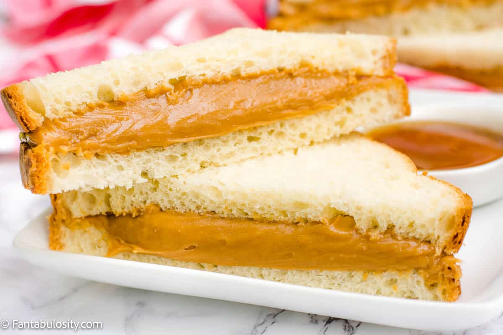

Peanut Butter Sandwich
Description
I want a peanut butter sandwich. I make a peanut butter sandwich. I eat a peanut butter sandwich
Ingredients
Instructions
- Spread a liberal amount of peanut butter on the bread
- Close the sandwich
Variations:
- Classic PB & J - Peanut butter and Jelly beans. Before closing the sandwich, place jelly beans in the peanut butter, and close the sandwich.
- PB & B - apply peanut butter to both slices of bread, then slice a banana onto the peanut butter.
- Toasted Peanut Butter Sandwich - Toast bread before applying peanut butter. It's not rocket science.